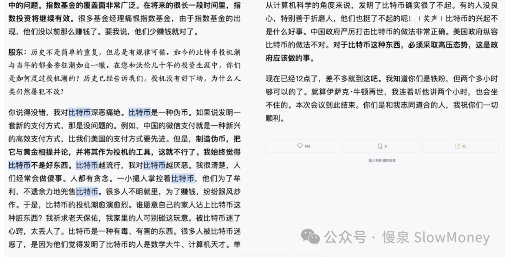

宏观讨论20260306-扫盲比特币
2026-03-06 · 扫盲比特币 · 宏观讨论（补档）
读了两本书——《货币金字塔》《货币未来》，可以快速阅读。总结一下，加深理解：货币是什么、货币史怎么走到今天、比特币想成为什么。
什么是货币？
货币分层框架：作为第一层的货币黄金；作为第二层的强势政府货币；作为第三层的联系（挂钩）强势政府货币的其他货币；作为第四层的流通货币。
第一层货币的特征：稀缺性；流通交易；可储存。
【明斯基】：每个人都可以创造货币，但问题是否能被人接受。
【米塞斯】：货币，不存在人类意识之外。
货币的历史
罗马铸币：贬值。弗罗林：3.5g 黄金，后贬值。
金本位的确立与瓦解：
- 1834 年：确立 1 盎司黄金 = 20.67 美金。
- 1934 年：调整至 35 美金。
- 1944 年：布雷顿森林体系。
- 1971 年：脱钩黄金。
- 1998 年 LTCM 救助、2008 年金融机构救助：美元信用。
新型货币——比特币
货币主义复兴：传统货币基于信任，当下纸币的信任逐步消失的过程中。
【中本聪】比特币：纯点对点版本的电子现金将允许一方直接对另一方进行在线支付，而无需经过任何金融机构。
比特币的类比理解：vs 黄金；vs 土地；vs 电子邮件。
【芬尼】：比特币替代黄金成为货币分层的第一层货币，银行以比特币为基础发行代币。
下期研究：大佬的观点
下期研究大佬对比特币的观点，先看【芒格】——他说得直白：比特币是一种伪币，把它与黄金相提并论并作为投机的工具，这就不行了；比特币越流行，我对它越厌恶。

每个人都可以创造货币，但问题是否能被人接受——明斯基。
原文 / 观点：Matt · johsnon0827@gmail.com